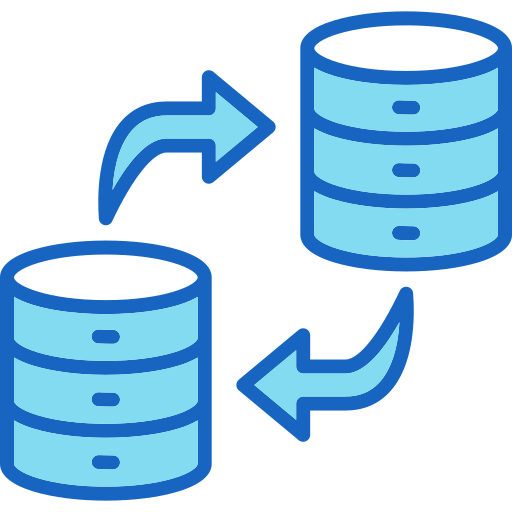
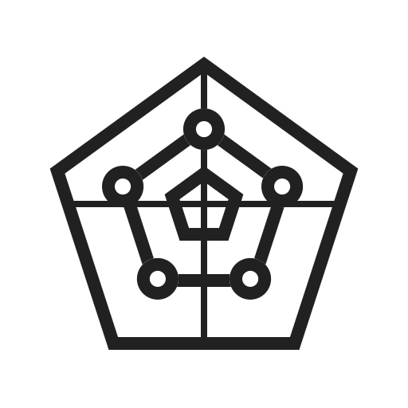

DFM is an enterprise platform that helps organizations deploy, monitor, manage, and govern Apache NiFi data flows from a single centralized interface. The goal was to eliminate manual operations, reduce deployment failures, and make complex data flow management accessible to both technical and operational teams.
This case study reframes the product story from a feature-focused narrative into a strategic UI/UX design case study that highlights research, problem-solving, decision-making, user workflows, and measurable impact.
90%
Reduced deployment effort
By automating repetitive operational workflows across environments and clusters. Teams were able to eliminate manual deployment dependencies, reducing operational overhead and improving efficiency at enterprise scale.
6hr→Min
Minimized multi-cluster deployment time from hours to minutes
Minimized multi-cluster deployment time from several hours to just a few minutes through centralized deployment management, validation workflows, and streamlined environment promotion processes.
$1M+
Saved vs. enterprise vendor per year
Helped enterprises significantly reduce infrastructure and operational costs by removing dependency on expensive vendor-managed ecosystem solutions while improving operational scalability and control.
Before & After DFM


Before
After
My Design Process
What is Apache NiFi?
Apache NiFi is a platform used by enterprises to move, transform, and automate data between systems. Think of it as a highway system for data. Just as highways connect cities and enable the movement of people and goods, NiFi connects applications, databases, cloud services, and enterprise systems to ensure data reaches the right destination efficiently and securely. Companies use it to:

Move Data Between Applications
Businesses often use multiple software systems that need to communicate with each other. NiFi automatically transfers data between these systems, eliminating the need for manual exports and imports.
Process Millions of Records
Large enterprises generate enormous volumes of data every day. NiFi can process and route millions of records continuously while maintaining reliability and performance.
Automate Business Workflows
Many business processes require data to move through multiple systems before reaching its final destination. NiFi automates these workflows by moving and transforming data at every step.
Connect Databases, APIs, and Cloud Platforms
Modern enterprises rely on a mix of technologies and platforms. NiFi acts as a bridge between these systems, enabling seamless data exchange regardless of where the data originates.
Research & Discovery
Objective
Before designing solutions, I needed to understand how enterprise teams were managing Apache NiFi environments, what operational challenges they faced, and where inefficiencies existed in their daily workflows.
The goal was to uncover the root causes behind deployment delays, operational complexity, and the growing dependence on NiFi specialists.
Understanding the Domain
Since DFM was built for Apache NiFi users, the first step was gaining a deeper understanding of the NiFi ecosystem and how organizations use it in production environments.
Areas Explored

Apache NiFi architecture
Cluster management workflows
Flow deployment lifecycle
Environment promotion process (Dev → QA → Production)
Governance and compliance requirements
Monitoring and troubleshooting practices
Key Insights
While Apache NiFi is highly effective at moving and processing data, organizations often struggle with operational management as the number of clusters, environments, and flows increases.
The Challenge
While NiFi is powerful, managing it at enterprise scale becomes increasingly difficult.
"While developers could build flows visually inside the NiFi canvas, operators responsible for deployment and maintenance lacked a dedicated operational layer."
| Teams face challenges such as |
Business Impact
|
|---|---|
| Multiple cluster management | Managing multiple clusters separately increased operational complexity and reduced efficiency. |
| Manual deployments | Repetitive deployment processes consumed valuable engineering time and increased human error. |
| Poor visibility into changes | Limited traceability made troubleshooting and accountability difficult. |
| No centralized governance | Inconsistent controls across environments created compliance and security challenges. |
| High dependency on NiFi specialists | Teams struggled to scale operations due to reliance on a few highly specialized users. |
| Deployment failures caused by configuration errors | Manual configuration issues frequently delayed releases and disrupted workflows. |
These challenges increase operational costs and slow down releases.
Drop-offs, outages, and runaway costs all peaked at the same moment: when a finished flow needed to move from canvas to cluster. That wasn't an engineering problem — it was a product gap.
Stakeholder Interviews
To understand the business and technical challenges, interviews were conducted with cross-functional stakeholders involved in managing NiFi environments.
Participants
01 / 05
Data Engineers
Pipeline Dev
02 / 05
DevOps Engineers
CI/CD
03 / 05
Platform Admins
Infrastructure
04 / 05
Solution Architects
Architecture
05 / 05
Product Stakeholders
Business
Key Questions
- How are flows deployed today?
- What are the most time-consuming steps in the deployment process?
- Where do failures typically occur during deployments?
- How many clusters are managed across the organization?
- How often do teams switch between environments?
- How are issues currently detected — automated alerts or manual checks?
- How long does troubleshooting typically take to resolve?
- How are changes currently tracked and audited across the platform?
- How are user permissions and access levels managed?
Key Findings
Teams reported spending significant time on operational activities rather than actual data engineering work.
Common Challenges
Logging into multiple clusters daily with no unified access point
Repeated configuration updates across environments without automation
Manual validation steps required before every deployment cycle
Lack of deployment visibility — no status or progress tracking
Difficulty identifying recent changes and their authors or intent
Heavy dependence on experienced NiFi admins as knowledge gatekeepers
Three iterations, two pivots, fourteen weeks. The final model was unrecognizable from week one — but every change was traceable to a specific operator failure observed in research.
The move from dashboard to command center wasn't a stylistic preference — it was the product finding its correct category. DFM isn't a monitoring tool. It's a decision surface for people who move fast in complex systems.
Competitor Analysis
Before designing DFM, I audited every solution NiFi teams were relying on. The finding was stark: not one tool was built for the operator's complete workflow. Each covered a fragment at best.
| Tool | What It Actually Covers | Ops Awareness | Verdict |
|---|---|---|---|
|
NiFi UI
Native Tool
|
Flow design, canvas editing. No deployment, no multi-cluster, no audit trail. | Design Only | |
|
NiFi Registry
Native Tool
|
Version control for flows. No deployment automation, no cluster management. | Partial | |
|
Ansible / Scripts
DIY Automation
|
Custom CI/CD per cluster. Brittle, high maintenance, no validation, no UI. | Fragile | |
|
Cloudera / Hortonworks
Enterprise Vendor
|
Managed NiFi env with some ops tooling — but fully vendor-locked. | Locked In | |
|
◈ DFM
New Category
|
End-to-end for NiFi operators: deploy, promote, monitor, heal — via prompt or UI. On-prem, no vendor lock. | Opportunity |
Audit across four existing NiFi tooling categories — none provided a complete operational workflow for on-premise enterprise teams.
The gap wasn't a missing feature inside NiFi. It was an entirely missing product category: NiFi operations. No one had built it. That framed DFM not as a plugin — but as a platform.
User Persona
Research across 14 enterprise NiFi teams surfaced a consistent archetype — a hybrid role operating under pressure without a product built for them.
👨💻
Arjun Mehta
Senior Data Platform Engineer
Enterprise Logistics · 600+ employees
Enterprise Logistics · 600+ employees
"I spend more time babysitting deployments than actually improving the platform."
Experience6 years
NiFi Clusters12–42
On-call nights3–5 / month
Deploy time6–8 hrs each
Responsibilities
Deploy flows across environments
Monitor production pipelines
Validate deployments
Handle incidents & rollback
Maintain operational reliability
Goals
Deploy flows faster with minimal risk
Reduce manual operational work
Improve deployment visibility
Eliminate overnight monitoring
Standardize operational workflows
Frustrations
NiFi UI requires full manual re-login and reconfiguration per cluster, every time
Flow drift goes undetected for days — silently corrupting pipelines
No rollback. A bad deploy means rebuilding the previous state by hand
Management expects "5-minute deploys" — he can't explain why it takes 8 hours
Current Workarounds
NiFi Canvas
Ansible Playbooks
Bash Scripts
Confluence Docs
Slack Alerts
Excel Trackers
Composite persona built from 14 operator interviews across logistics, healthcare, and financial services verticals.
Arjun wasn't asking for a prettier dashboard. He was asking for the ability to do his job without holding everything in his head. That shaped every design decision that followed.
Why we designed
it this way.
Every major design decision in DFM was grounded in a specific operator behavior or failure mode observed in research. These weren't preferences — they were structural responses to what we found.
Prompt-first, UI-second
Operators think in commands — not navigation menus. A conversational interface matched their mental model and compressed 14 clicks into one sentence.
RejectedDashboard with dropdowns per action
ChosenNatural language command + structured confirmation
Environment pipeline as primary view
Every operator's mental model started with "which env is this in?" Making Dev → QA → Prod the persistent navigation rail eliminated the #1 source of deployment errors.
RejectedCluster-list as primary navigation
ChosenEnvironment pipeline as persistent top-rail
Blocking validation gate before promotion
95% of production incidents traced back to a promotion that skipped validation. We made pre-promotion validation non-optional — a blocking UI step, not a dismissible warning.
RejectedOptional pre-flight checklist
ChosenBlocking gate with diff view before every promote
Proactive health surface, not reactive logs
Operators described trawling logs for hours after silent failures. We surfaced health as a live ambient signal. Status pulses. Anomalies float to the top. The system speaks before you ask.
RejectedLog viewer + manual polling
ChosenLive health surface with auto-surfaced anomalies
On-premise, RBAC-gated, with full audit trail
Enterprise NiFi teams operate in regulated environments — HIPAA, SOC 2, ISO 27001. Every design decision was constrained by the requirement that DFM deploys inside a client's own infrastructure. Cloud-first was never an option. Every action generates an immutable log entry tied to a user identity and timestamp — required by compliance auditors, and surfaced in-product as a first-class audit view.
RejectedSaaS with optional compliance add-ons
ChosenOn-prem-first with RBAC + audit trail baked in from day one
Each decision maps directly to a research finding — these weren't aesthetic choices, they were responses to observed operator failure modes.
The hardest constraint was building something that felt fast and conversational while satisfying Fortune 500 compliance requirements. That tension produced DFM's core UX architecture.
Product Screenshots
DFM shipped to pilot customers across logistics, healthcare, and financial services. These are the numbers from the first six months of production use.


100%
Final Reflection
DFM transformed Apache NiFi operations from a fragmented, manual process into a centralized enterprise workflow experience. By focusing deeply on operator behavior, deployment psychology, and operational reliability, the platform evolved beyond a traditional dashboard into a product designed specifically for enterprise-scale data operations.
The result was a scalable operational experience that improved deployment confidence, reduced manual effort, and simplified how organizations managed complex NiFi infrastructures.